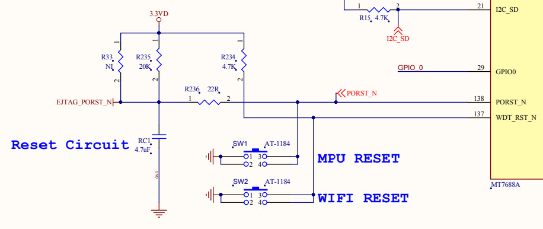
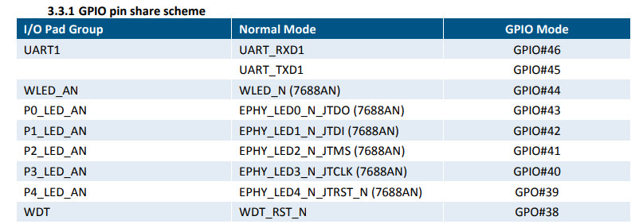
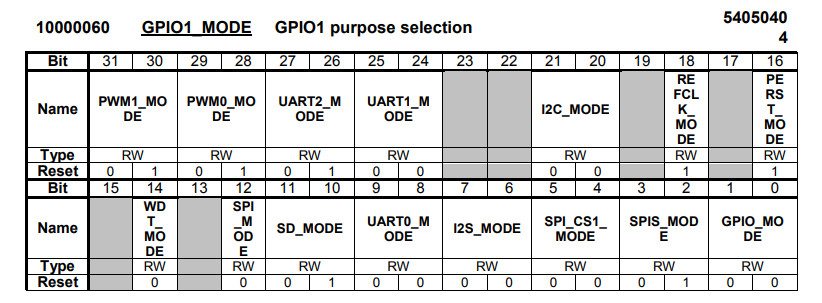
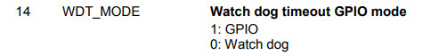
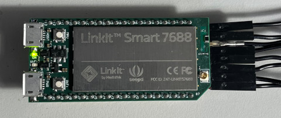
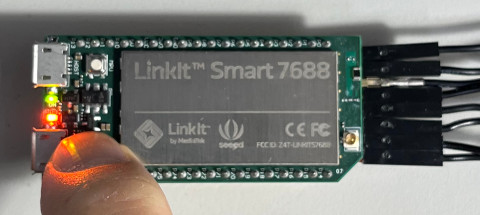

WIFI RESET按鍵是連接到WDT_RST_N






.extern _start
.set noreorder
.equiv GPIO1_MODE, 0xb0000060
.equiv GPIO_CTRL_1, 0xb0000604
.equiv GPIO_DATA_1, 0xb0000624
.equiv WDT_MODE, 14
.equiv LED, (44 - 32)
.text
_start:
b reset
.org 0x400
reset:
li $8, GPIO1_MODE
lw $9, 0($8)
or $9, (1 << WDT_MODE)
sw $9, 0($8)
li $8, GPIO_CTRL_1
li $9, (1 << LED)
sw $9, 0($8)
loop:
li $8, GPIO_DATA_1
lw $9, 0($8)
sll $9, 6
sw $9, 0($8)
b loop
nop
完成

